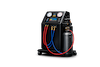
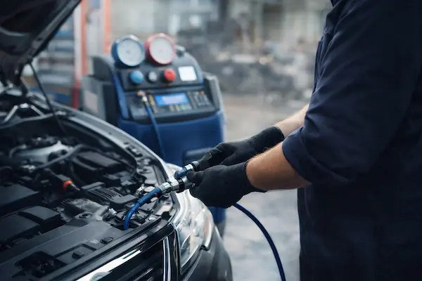

ЗАПРАВКА, ДІАГНОСТИКА ТА ЧАСТКОВИЙ РЕМОНТ
АВТОКОНДИЦІОНЕРІВ У БУЧІ
Комфорт у салоні починається зі справного автокондиціонера
м. Буча, Київська обл., вул. Депутатська, 3
Працюємо з понеділка по суботу!
Обслуговуємо авто з: Києва • Ірпеня • Гостомеля • Ворзеля

Заправка стендом
Точне дозування холодоагенту R134a та вакуумування системи
Діагностика витоків
Перевіряємо систему вакууматором перед заправкою та ремонтом
Нове масло і барвник
Додаємо свіже масло з барвником для коректної роботи системи

Частковий ремонт
Заміна золотників, радіатора, фільтра та чистка системи
Заправка автокондиціонера на СТО АЛЕКС-ГАЗ

Заправка та обслуговування автокондиціонерів у Бучі — комфорт у салоні без зайвих витрат
Якщо автокондиціонер у Бучі почав охолоджувати слабше, дме теплим повітрям або холод швидко зникає, не варто чекати піку спеки. Своєчасна заправка автокондиціонера допомагає відновити нормальну роботу системи та повернути комфорт у салоні. На СТО АЛЕКС-ГАЗ ми виконуємо заправку автокондиціонерів стендом, проводимо вакуумування системи та заправляємо R134a з додаванням нового масла і барвника.
Коли потрібна заправка автокондиціонера?
Найчастіше до нас звертаються, коли кондиціонер не холодить, охолоджує слабко, довго виходить на нормальну температуру або втрачає ефективність у спеку та заторах. Також варто приїхати на перевірку, якщо система давно не обслуговувалась або після ремонту автокондиціонера потрібно виконати повторну заправку.
Що входить у заправку автокондиціонера?
Ми проводимо заправку автокондиціонера у Бучі не “всліпу”, а з контролем стану системи. У стандартне обслуговування може входити перевірка герметичності, вакуумування, заправка холодоагентом R134a, а також додавання нового масла з барвником для коректної роботи системи та подальшої діагностики.
Скільки коштує заправка автокондиціонера у Бучі?
Вартість робіт — 500 грн. Холодоагент R134a — 2 грн за 1 грам. Підсумкова ціна залежить від того, скільки холодоагенту потрібно саме вашій системі. Такий формат зручний для клієнта: ви розумієте вартість роботи одразу і окремо бачите витрату фреону.
Чому водії з Києва та області звертаються саме до нас?
СТО АЛЕКС-ГАЗ у Бучі — це зручне рішення для водіїв, яким потрібна заправка автокондиціонера, діагностика системи кондиціонування або обслуговування кондиціонера авто без зайвої тяганини.
Прозора ціна та зрозумілий підхід
Ми одразу озвучуємо базову вартість робіт: 500 грн + 2 грн/г R134a. Якщо потрібні додаткові роботи, спочатку пояснюємо, що саме рекомендуємо і чому.
Зручне розташування для всього регіону
Знаходимось у Бучі за адресою вул. Депутатська, 3 — це зручно для клієнтів з Києва, Ірпеня, Гостомеля та Ворзеля, яким потрібен швидкий і зрозумілий сервіс по автокондиціонеру.
Обслуговування без зайвих робіт
Ми не нав’язуємо “повний ремонт”, якщо проблема вирішується заправкою, чисткою або заміною окремого елемента. Саме тому до нас приїжджають і на разову заправку автокондиціонера, і на подальше обслуговування системи.
Як проходить заправка автокондиціонера на нашому СТО?
Процес обслуговування включає перевірку стану системи, вакуумування, заправку R134a, додавання масла та барвника, а за потреби — рекомендації щодо подальшого ремонту або чистки. У підсумку ви отримуєте працюючий автокондиціонер і розуміння, в якому стані система зараз.
Записуйтесь на заправку автокондиціонера у Бучі вже сьогодні!
Якщо кондиціонер охолоджує слабко, не працює як раніше або ви хочете підготувати авто до сезону — приїжджайте на заправку та діагностику автокондиціонера в СТО АЛЕКС-ГАЗ. Дзвоніть за номером +38 (050) 819-97-57 або залишайте заявку на сайті — підкажемо, що краще зробити у вашому випадку.
Наші послуги з автокондиціонерів у Бучі, Києві та області
Заправка
автокондиціонера
від 500 грн + 2 грн/г

Чистка та антигрибкова
обробка системи
від 500 грн

Заміна фільтра
кондиціонера
від 100 грн

Професійна діагностика автокондиціонера у Бучі
Своєчасна діагностика автокондиціонера у Бучі — це найкращий спосіб зрозуміти, чому система перестала нормально охолоджувати салон. Якщо кондиціонер дме слабко, холод швидко зникає, з’явився неприємний запах або є підозра на витік — починати потрібно саме з перевірки системи, а не просто з дозаправки.
Діагностика автокондиціонера: як ми перевіряємо систему?
Наша діагностика автокондиціонера у Бучі допомагає визначити стан системи перед заправкою або ремонтом. Основний етап — перевірка на витік вакууматором, щоб зрозуміти, чи тримає система герметичність.
- Перевірка системи вакууматором — визначаємо, чи є підозра на витік і чи можна безпечно виконувати заправку
- Оцінка герметичності автокондиціонера — перевіряємо, чи тримає система вакуум перед обслуговуванням
- Діагностика перед заправкою R134a — щоб не заправляти систему, якщо проблема не вирішена
- Контроль стану системи — визначаємо, чи достатньо заправки, чи вже потрібен частковий ремонт
- Рекомендації по подальших роботах — підказуємо, чи потрібна заміна золотників, радіатора, чистка системи або заміна фільтра кондиціонера
У яких випадках потрібна діагностика автокондиціонера?
До нас часто звертаються із запитами “автокондиціонер не холодить”, “заправив кондиціонер, але холод знову зник”, “неприємний запах із повітроводів” або “слабкий обдув у салоні”. У таких випадках діагностика автокондиціонера дозволяє зрозуміти, чи проблема у нестачі холодоагенту, витоку, забрудненні системи або окремих елементах кондиціонера.
Для водіїв з Бучі, Ірпеня, Гостомеля, Ворзеля та Києва діагностика автокондиціонера — це можливість не витрачати гроші на зайві роботи. Ми спочатку перевіряємо систему, а вже потім рекомендуємо заправку автокондиціонера R134a, чистку, антигрибкову обробку або частковий ремонт автокондиціонера.
Частковий ремонт автокондиціонера
на СТО АЛЕКС-ГАЗ

Кондиціонер не холодить? Заправка не допомогла? Знайдемо причину і вирішимо проблему без зайвих витрат
Якщо автокондиціонер перестав нормально охолоджувати, дме теплим повітрям, холод швидко зникає або після заправки все працює лише кілька днів — це вже не норма. У таких випадках проста заправка не вирішує проблему, тому що в системі є витік або несправний елемент. І чим довше їздити з такою проблемою, тим дорожчим стане ремонт.
У більшості випадків не потрібен “капітальний ремонт”. Достатньо часткового ремонту автокондиціонера, щоб повернути нормальну роботу системи. Ми не ремонтуємо “все підряд” — спочатку визначаємо точну причину, а потім пропонуємо тільки ті роботи, які реально потрібні.
Найчастіше проблема вирішується локально: витік на з’єднанні, зношений заправний золотник, пошкоджена трубка або магістраль, або несправність радіатора кондиціонера. У таких випадках ми виконуємо герметизацію системи, заміну елементів або відновлення стиків і трубок, після чого система знову працює стабільно.
Після ремонту обов’язково проводимо перевірку та заправку автокондиціонера R134a з додаванням масла і барвника, щоб ви не просто отримали холод, а й розуміли, що система герметична і працює правильно.
Важливо: якщо кондиціонер вже заправляли, але холод знову пропав — не витрачайте гроші на повторні заправки. Це майже завжди означає витік. Краще один раз знайти і усунути причину, ніж заправляти систему кожні кілька тижнів.
Ми знаходимось у Бучі, вул. Депутатська, 3 і працюємо з клієнтами з Києва, Ірпеня, Гостомеля та Ворзеля. Якщо хочете швидко зрозуміти, що з вашим кондиціонером і скільки це реально коштує — зателефонуйте прямо зараз або залиште заявку.
Не тягніть до спеки — приїжджайте на перевірку вже сьогодні
Чим раніше ви звернетесь, тим дешевше обійдеться ремонт. Дзвоніть: +38 (050) 819-97-57 — підкажемо по симптомах і скажемо, чи можна вирішити проблему швидко і без зайвих витрат.
Отримайте знижку 10 % на діагностику автокондиціонера прямо зараз!
Залиште свій номер телефону і наш менеджер зв'яжеться з вами для оформлення знижки
Відгуки клієнтів про автокондиціонери
Відгуки водіїв з Бучі, Ірпеня, Гостомеля, Ворзеля та Києва про заправку, діагностику і частковий ремонт автокондиціонерів у СТО АЛЕКС-ГАЗ

Наталія Ткаченко
Потрібен був частковий ремонт автокондиціонера. Замінити потрібну деталь, усе перевірили та після цього заправили систему. Зараз кондиціонер працює стабільно, без нарікань.

Дмитро Левченко
Приїхав з Києва на обслуговування автокондиціонера. По ціні зорієнтували одразу, зробили все акуратно і досить швидко. Після сервісу холод у салоні став відчутно кращим.

Марина Шаповал
Зверталась на заміна радіатора кондиціонера з подальшою перевіркою та заправкою. Все пояснили зрозуміло, роботу виконали без затягування. Результатом повністю задоволена.

Олександр Мельник
Приїхав на заправку автокондиціонера, бо в машині майже зник холод. Все перевірили, зробили вакуумування і заправку стендом. Після обслуговування кондиціонер знову нормально охолоджує.

Ірина Ковальчук
Зверталась на діагностику автокондиціонера, бо холод швидко зникав. Майстри перевірили систему і пояснили, у чому проблема. Сподобалось, що все сказали чітко і без нав’язування зайвих робіт.

Сергій Бойко
Робив чистку системи кондиціонування і антигрибкову обробку. До цього був неприємний запах у салоні, після сервісу стало набагато краще. Роботою задоволений.
Поширені запитання про автокондиціонери
Найчастіше причина в нестачі холодоагенту або витоку в системі. Також проблема може бути пов’язана із забрудненням радіатора, зношеними елементами системи чи несправністю окремих вузлів.
- Система охолоджує слабше, ніж раніше
- Прохолода з’являється не відразу або швидко зникає
- Кондиціонер працює нестабільно в заторах або у спеку
У таких випадках починати потрібно з діагностики, а не просто з дозаправки.
Ми перевіряємо систему вакууматором перед заправкою або ремонтом, щоб оцінити її герметичність.
- Перевіряємо, чи тримає система вакуум
- Оцінюємо, чи є підозра на витік
- За потреби рекомендуємо подальший частковий ремонт
Такий підхід дозволяє не заправляти систему “всліпу”, якщо є проблема з герметичністю.
Заправка потрібна не за календарем, а за станом системи. Якщо кондиціонер працює нормально, втручання може не знадобитися довго. Але при слабкому охолодженні, підозрі на витік або після ремонту систему потрібно перевіряти.
- Орієнтир для перевірки — раз на 1-2 роки
- Раніше звертаються, якщо зник холод або є підозра на витік
- Після ремонту систему обов’язково перевіряють повторно
Якщо кондиціонер працює гірше — краще не тягнути до піку спеки.
Ми заправляємо автокондиціонери холодоагентом R134a.
- Заправка проводиться стендом
- Можемо виконати вакуумування системи
- Додаємо нове масло
- Додаємо барвник для подальшої діагностики
Це дозволяє коректно обслужити систему та полегшує пошук проблем у майбутньому.
Вартість робіт — 500 грн.
- Холодоагент R134a — 2 грн за 1 грам
- Підсумкова ціна залежить від обсягу заправки
- Додаткові роботи рахуються окремо, якщо вони потрібні
Точну суму озвучуємо після огляду та перевірки стану системи.
Неприємний запах зазвичай пов’язаний не з браком холодоагенту, а із забрудненням системи, бактеріями, грибком або станом салонного фільтра.
- Заправка сама по собі не прибирає запах
- Потрібна чистка системи кондиціонування
- За потреби виконується антигрибкова обробка
- Також варто перевірити фільтр кондиціонера
Якщо в салоні з’явився затхлий запах — краще одразу робити обслуговування, а не чекати.
Слабкий потік повітря не завжди означає, що проблема саме у фреоні.
- Однією з частих причин є забруднений салонний фільтр
- Можливе забруднення елементів системи
- Іноді проблема поєднується зі слабким охолодженням
У таких випадках потрібна не лише заправка, а й перевірка стану фільтра та системи в цілому.
Ми займаємось частковим ремонтом автокондиціонерів, коли проблему можна вирішити без повного відновлення системи.
- Заміна заправних золотників
- Заміна радіатора кондиціонера
- Чистка системи кондиціонування піною
- Антигрибкова обробка
- Заміна фільтрів кондиціонера
Після огляду підкажемо, чи достатньо часткового ремонту, чи потрібне глибше втручання.
Час залежить від стану системи та обсягу робіт.
- Проста перевірка та заправка займає менше часу
- Якщо є підозра на витік — потрібна додаткова діагностика
- При частковому ремонті час узгоджується окремо
У стандартних випадках обслуговування займає відносно недовго, але якщо виявляється несправність, термін збільшується.
Записатись можна телефоном або через форму на сайті.
- Телефон: +38 (050) 819-97-57
- Графік роботи: Пн-Сб, 8:30-18:00
- Адреса: Буча, вул. Депутатська, 3
- Консультація: попередньо уточнимо симптоми
Перед записом бажано назвати марку авто, опис проблеми та чи охолоджує система зараз хоча б частково.
Ваш запит відправлено!
Наші спеціалісти зателефонують Вам протягом 10 хвилин!